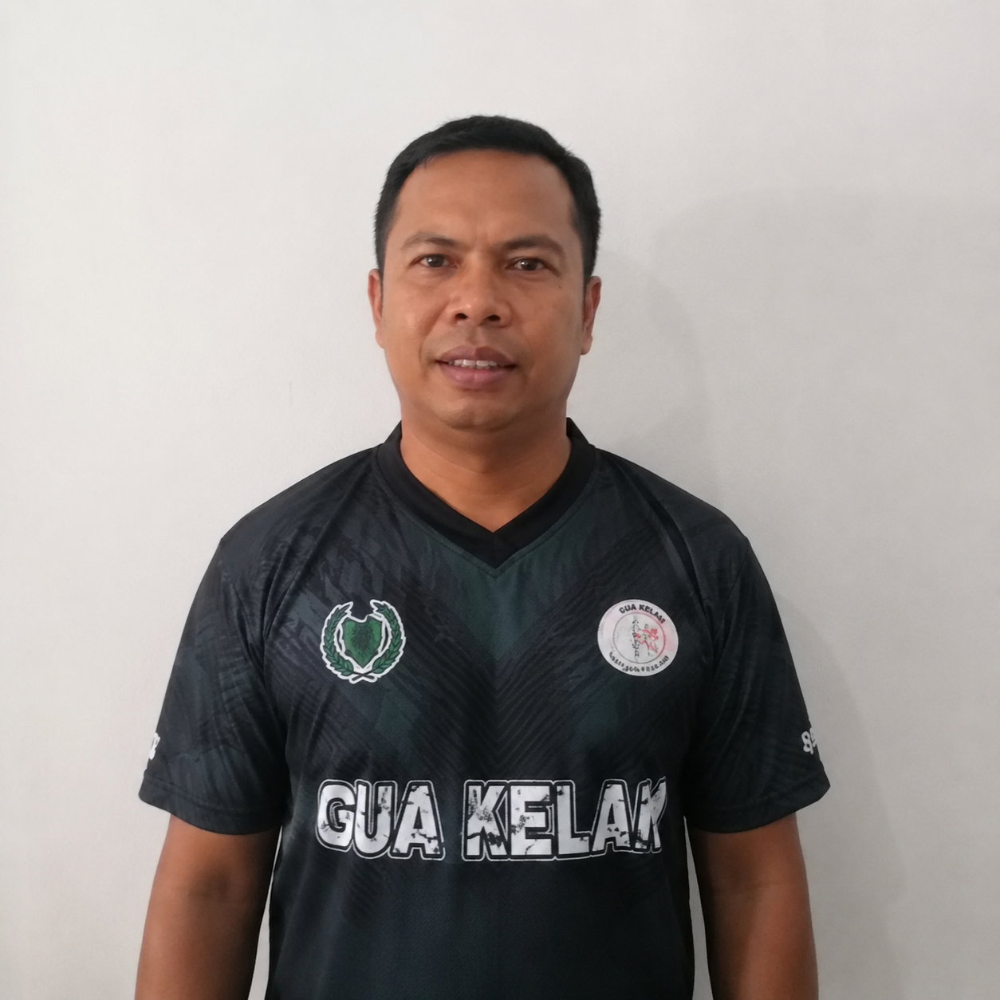

About Mohd Farizul
Pembantu Khidmat Am | Gua Kelam, Perlis
📌 Introduction
Mohd Farizul Bin Abu Hassan is a dedicated staff member working at Gua Kelam, Perlis.
📅 Background
Born on 18 August 1987, he joined Gua Kelam on 1 February 2023.
⭐ Personality
He is hardworking, friendly, and responsible in ensuring visitors have a safe experience.